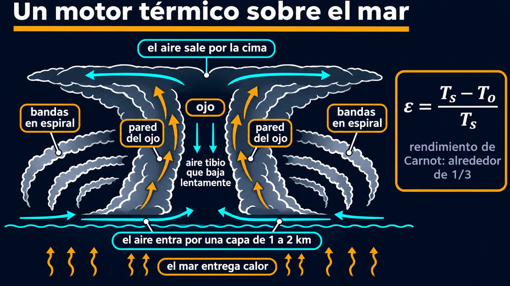
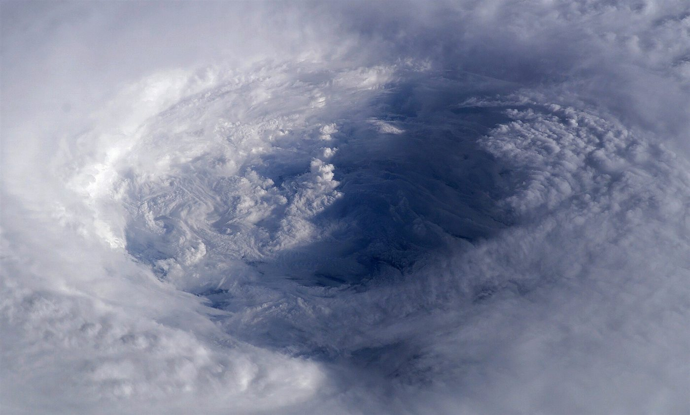

El ciclón como motor térmico y el ojo de la tormenta
Un huracán es la tormenta de viento más destructiva del planeta, y también una máquina térmica casi de libro. El mar le da calor, el espacio se lleva el calor sobrante y, entre los dos, gira un motor enorme. Kerry Emanuel, del Instituto de Tecnología de Massachusetts, mostró que se puede estimar cuánto puede soplar a partir del ciclo ideal de Sadi Carnot.
«Huracán» es el nombre regional de una clase general de tormentas, los ciclones tropicales, cuando aparecen sobre el Atlántico norte o el Pacífico nororiental y tienen vientos máximos de más de 32 m/s [1]. Alrededor del mundo se forman unos 90 por año, y solo cerca del 12 % en el Atlántico [1]. Nunca se forman a menos de unos 3° del ecuador, porque ahí la rotación terrestre no alcanza para sostener una tormenta que gire [1], una consecuencia de lo que se ve en el viento geostrófico.
La circulación de un huracán maduro tiene tres partes [2]. Abajo, el aire entra hacia el centro por una capa de fricción de 1 a 2 kilómetros de espesor. Después sube, sobre todo por una estrecha pared del ojo, inclinada hacia afuera, a entre 5 y 100 kilómetros del centro. Arriba, sale hacia afuera en una capa delgada en la cima de la tormenta.

La pared del ojo parece un coliseo de nubes convectivas alrededor de un ojo a menudo casi despejado [2]. En el ojo, aire tibio desciende lentamente cerca del centro [2], y esa circulación se mantiene mecánicamente, no por flotación [2]. Afuera de la pared suele haber una o más bandas de nubes en espiral [2].

Un motor a vapor con caldera de mar: en una máquina térmica, el calor entra a alta temperatura, sale a baja temperatura y la diferencia se convierte en trabajo. En el huracán, la caldera es el mar tropical, el condensador es la alta atmósfera fría, y el trabajo es el viento.
Los ciclones tropicales se alimentan de flujos de calor del océano, sobre todo el calor latente que acompaña a la evaporación del agua de mar [1]. Son motores térmicos gigantes, que convierten la energía tomada del océano en viento, y esa energía se disipa en la turbulencia cerca de la superficie del mar [1]. Emanuel los idealizó en 1986 como una máquina de Carnot: en estado estacionario, la energía mecánica generada se equilibra con la disipación por fricción, que ocurre sobre todo en la interfase entre el aire y el mar [2].
El rendimiento es el de Carnot [2]:
En condiciones tropicales típicas, ε vale aproximadamente 1/3 [2]. Con unos 300 K en la superficie, eso equivale a una salida alrededor de 200 K (un cálculo propio). Se le saca a la ecuación una predicción: el viento máximo que el ambiente puede sostener, la intensidad potencial [1].
Hay una aclaración importante. La intensidad potencial depende de todo el ambiente termodinámico, aunque a menudo se la toma erróneamente como función de la temperatura del mar sola [1]. Y un valor alto no asegura una tormenta: la formación también depende de cómo cambian los vientos con la altura y de la humedad entre 1 y 6 kilómetros [1]. La intensidad potencial es un techo teórico.
Un motor que se apaga solo: los ciclones tropicales se disipan rápido al pasar sobre tierra o agua fría [1]. Es lo que se espera de una máquina a la que le cortan el combustible: sin evaporación, no hay entrada de calor, y la fricción sigue frenando. En el hemisferio sur giran en sentido horario, y en el norte en sentido antihorario, por la misma razón que cualquier baja presión (un comentario propio).
Un huracán es un motor que toma calor del mar a unos 300 K y lo entrega en altura, mucho más frío. Su rendimiento se parece al de un ciclo de Carnot, de alrededor de un tercio, y con esa idea se puede estimar el viento máximo que admite el ambiente. Sale de los mismos principios que cualquier máquina térmica, aplicados a una estructura enorme con un ojo casi despejado en el centro.
Pregunta para la comunidad: Si el océano y la atmósfera se calientan a la vez, ¿la intensidad potencial tiene por qué subir? Pensá en la fórmula: ¿qué importa más, la temperatura del mar o la diferencia con la altura?